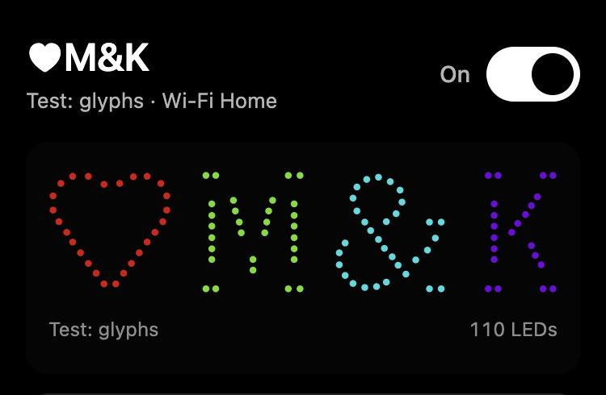
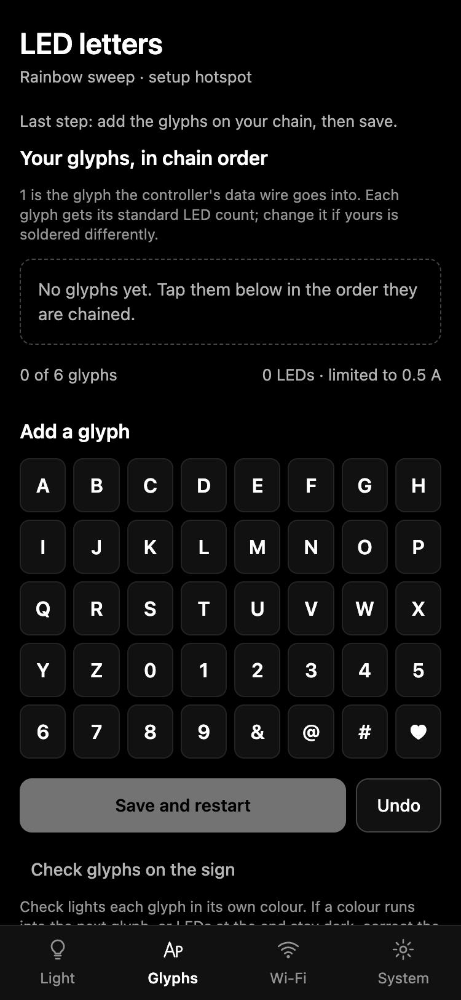
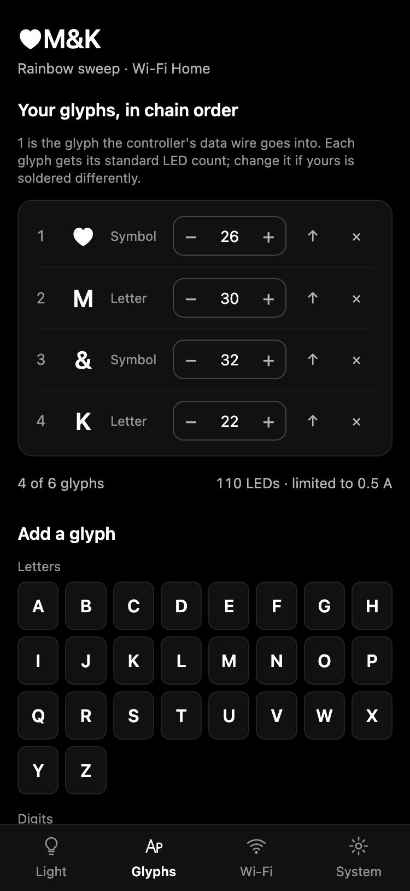
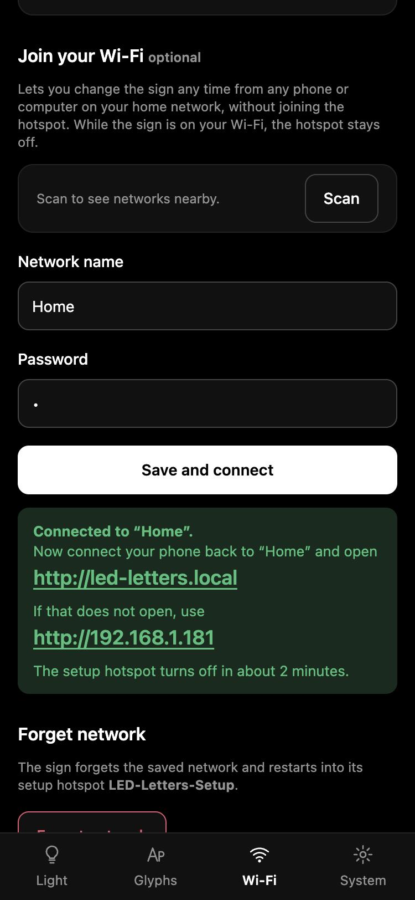
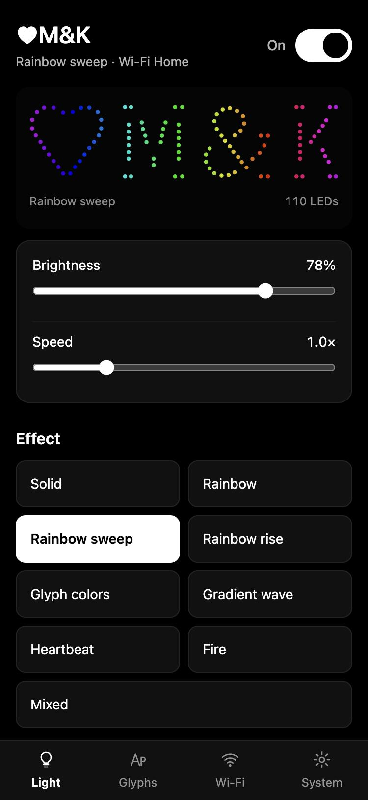
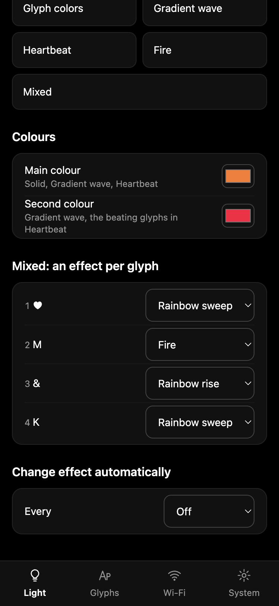
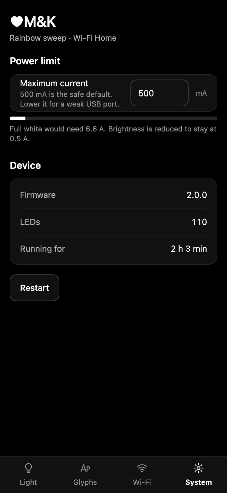

Turn your printed letters into a glowing sign. Install the software once, then set everything up from your phone. No app and no coding.

You only do steps 1 to 4 once. After that, the sign remembers everything.
| Item | Notes |
|---|---|
| Your glyphs | Printed and fitted with LED strip (see step 3). Up to six in one sign. |
| The controller | A small ESP32-C3 board with a USB-C socket and two tiny buttons. |
| A USB-C cable | One that carries data, not only charging, for installing the software. |
| A power supply | A good USB phone charger (1 A or more) for up to four glyphs. For five or six glyphs, a stable 5 V supply (see step 8). |
| A computer | Only for installing the software once. Chrome or Edge browser, Windows, Mac or Linux. |
| A phone | Any smartphone with Wi-Fi and a web browser. No app needed. |
The controller sends light to the glyphs one after another, like a chain. It also makes its own small Wi-Fi network, called a hotspot. You join it with your phone and a page opens where you set everything up. Your home Wi-Fi is not needed, but you can connect the sign to it later if you like.
You do this once, before connecting the glyphs. It takes about two minutes and nothing needs to be installed on your computer.
led-letters-esp32c3-full.bin from the newest version.0x0, then click
"Choose File" and select the file you downloaded.led-letters-esp32c3-update.bin
with Flash Address 0x10000. The "full" file starts fresh and forgets your glyphs and Wi-Fi.Prefer the Arduino IDE? The GitHub page has instructions for that too.
Plug the controller into its power supply. Before you set it up, the LEDs show a moving rainbow, so you can see right away that everything is connected.
Your phone may say "no internet" on this network. That's normal: stay connected.


Tap "Check glyphs on the sign" under the Save button. Every glyph lights up in its own colour, and the preview at the top of the app shows what you should see:
Then choose any effect on the Light page to leave the check.
Without Wi-Fi the sign works just the same and keeps all its settings. You can always change things over the hotspot, within 10 minutes of switching it on. Connect it to your home Wi-Fi if you want to change effects at any time, from any phone or computer at home.
Once the sign is on your Wi-Fi, the setup hotspot stays off. To go back to the hotspot, use "Forget network" on the Wi-Fi page, or hold the button for 6 seconds (step 7).

The Light page is where you'll spend most of your time. The picture at the top is a live preview of your sign: it shows the effect you choose before you even look up.
Everything is saved on the sign straight away and kept when it's switched off.

| Effect | What it does |
|---|---|
| Solid | The whole sign in your main colour. |
| Rainbow | Rainbow colours running along the sign. |
| Rainbow sweep | A rainbow moving from left to right across the sign. |
| Rainbow rise | A rainbow rising from bottom to top. |
| Glyph colors | Every glyph in its own colour, slowly changing. |
| Gradient wave | Your two colours flowing across the sign. |
| Heartbeat | ♥ and & beat in your second colour; the other glyphs glow softly in your main colour. |
| Fire | Flickering flames, hotter at the bottom. |
| Mixed | A different effect on every glyph, chosen below the colours. |
Choose an effect for each glyph, for example fire on the M and a rainbow on the heart. Choosing one switches the sign to Mixed.
Tap a colour square to pick a colour. The main colour is used by Solid, Gradient wave and Heartbeat; the second colour by Gradient wave and the beating glyphs in Heartbeat.

The controller's BOOT button works the sign without a phone.
| Press | Does |
|---|---|
| Short press | Next effect. If the sign is off, it turns it on. |
| Hold about 1 second | Turns the sign on or off. |
| Hold 6 seconds | The sign blinks blue, forgets your Wi-Fi and opens the setup hotspot again. Your glyphs and effects are kept. |
The other button, RESET, just restarts the controller.
To protect the controller and the wiring, the sign never uses more than its power limit: 500 mA unless you change it. When an effect would need more, the sign dims itself a little.
Do not cover the glyphs or leave the sign in direct sunlight. Use it indoors only.

| Problem | What to do |
|---|---|
| No LEDs light up | Check the power supply and the cable to the first glyph. Make sure the controller's wire goes into the input of the first glyph. |
| I can't find LED-Letters-Setup | The hotspot is only there for 10 minutes after switching on, and not at all while the sign is on your Wi-Fi. Unplug the sign and plug it back in. If it is on your Wi-Fi, use its address instead, or hold the button for 6 seconds. |
| The set-up page doesn't open | Stay connected to LED-Letters-Setup and open http://192.168.4.1 in your browser. Turn off mobile data for a moment if your phone keeps leaving the network. |
| Wi-Fi: "Could not join" | Check the network name and password (they are case-sensitive). The sign needs a 2.4 GHz network; most home routers have one. |
| led-letters.local doesn't open | Use the number address shown on the app's Wi-Fi page, or look for "led-letters" in your router's list of devices. |
| Colours spill into the next glyph | An LED count is wrong. Use "Check glyphs on the sign" (step 4) and correct the numbers. |
| LEDs flicker or show random colours | Use a better power supply or shorter, thicker wires, and lower the brightness. |
| The sign is dimmer than expected | It is staying under the power limit (step 8). Lower the brightness a little, or use fewer glyphs per controller. |
| I want to start completely fresh | Install the software again with the "full" file (step 2). That forgets everything. |
Software, updates and technical details: github.com/maciejfic/led-letters
3D-printable glyphs: search for "LED Letters" on makerworld.com